1. 패키지 리스트
1.1 패키지 리스트 내보내기
선택한 모델 또는 패키지 하위에 있는 패키지 정보를 엑셀 형태의 패키지 리스트 문서 산출물로 내보내기 위하여 [03.설계모델]을 마우스 오른쪽 클릭 > [문서 내보내기] > [패키지 리스트 (xls)]를 선택합니다.
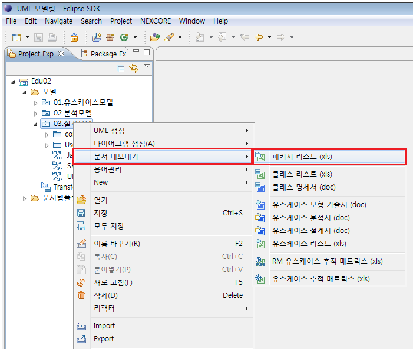
<그림 1. 패키지 리스트 생성 메뉴>
1.2 내보내기 할 패키지 선택
[패키지 리스트를 엑셀로 내보내기] 팝업창이 뜨면, 내보내기 할 패키지를 선택하고, 사용할 템플릿과 내보낼 파일명을 입력 후 [OK] 버튼을 클릭합니다.
사용할 템플릿은 기본적으로 내장된 엑셀 템플릿으로 설정되어 있습니다.
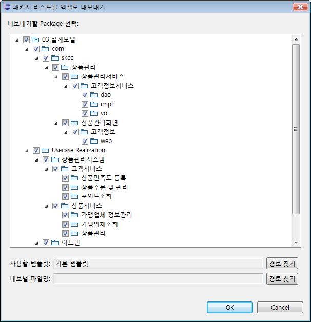
<그림 2. 패키지 리스트 선택>
※ 다른 템플릿을 사용하고 싶을 경우
[문서템플릿] 폴더를 선택 후, 마우스 오른쪽 클릭 > Import 기능을 이용하여 다른 템플릿을 가져옵니다.
Import한 템플릿은 [사용할 템플릿] 설정에서 [경로 찾기]를 통하여 적용할 수 있습니다.
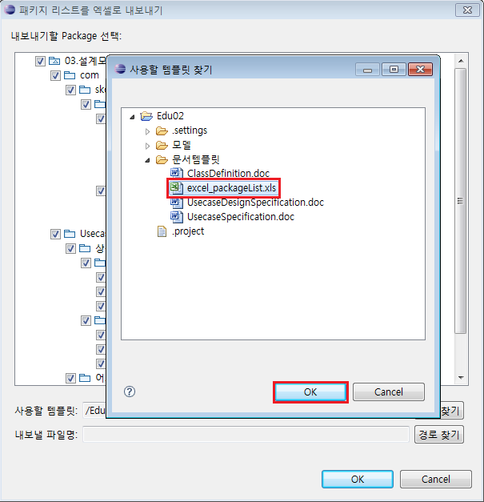
<그림 3. 템플릿 선택>
1.3 패키지 리스트 생성
[OK] 버튼을 클릭하면 원하는 위치에 [패키지 리스트]가 생성됩니다.
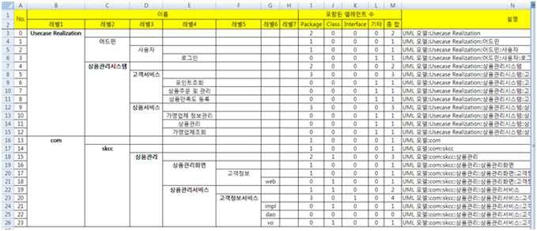
2. 클래스 리스트
2.1 클래스 리스트 내보내기
모델 [03.설계모델]을 마우스 오른쪽 클릭 > [문서 내보내기] > [클래스 리스트 (xls)] 를 선택합니다.
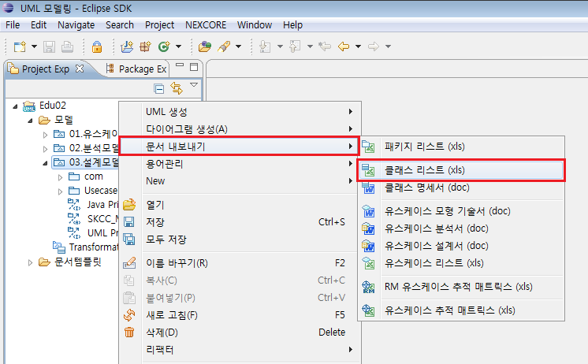
<그림 4. 클래스 리스트 생성 메뉴>
2.2 내보내기 할 요소 선택
[클래스 리스트를 엑셀로 내보내기] 팝업창이 뜨면, 내보내기 할 패키지 또는 클래스를 선택하고, 사용할 템플릿과 내보낼 파일명을 입력 후 [OK] 버튼을 클릭합니다.
사용할 템플릿은 기본적으로 내장된 엑셀 템플릿으로 설정되어 있습니다.
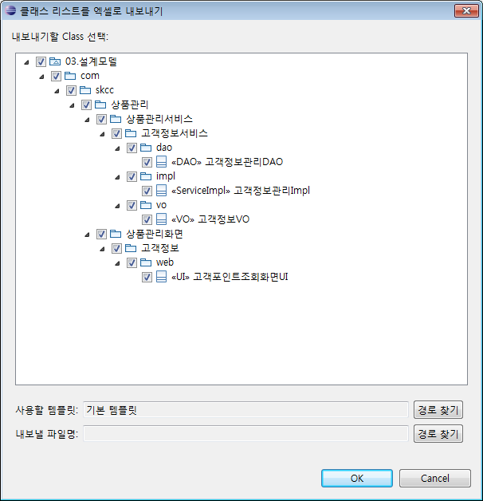
<그림 5. 클래스 리스트 선택>
※ 다른 템플릿을 사용하고 싶을 경우
[문서템플릿] 폴더를 선택 후, 마우스 오른쪽 클릭 > Import 기능을 이용하여 다른 템플릿을 가져옵니다.
Import한 템플릿은 [사용할 템플릿] 설정에서 [경로 찾기]를 통하여 적용할 수 있습니다.
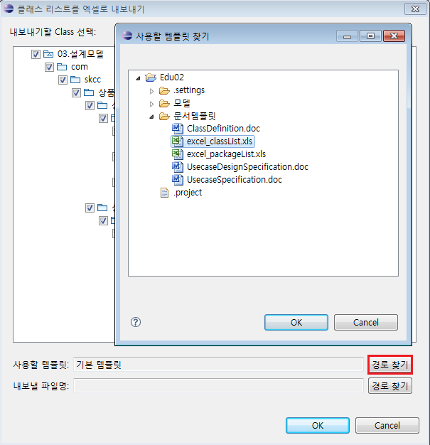
<그림 6. 클래스 리스트 선택>
2.3 클래스 리스트 생성
[OK] 버튼을 클릭하면 원하는 위치에 [클래스 리스트]가 생성됩니다.
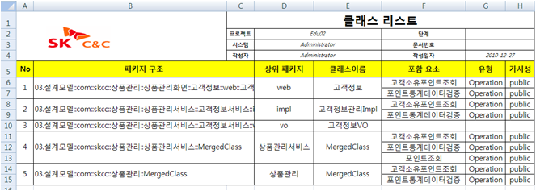
3. 유스케이스 모형 기술서
3.1 유스케이스 모형 기술서 내보내기
모델 하위에 있는 패키지를 기준으로 2 depth 아래에 있는 유스케이스들의 구조를 문서 산출물로 내보내기 위하여 [01.유스케이스모델]을 마우스 오른쪽 클릭 > [문서 내보내기] > [유스케이스 모형 기술서 (doc)]를 선택합니다.
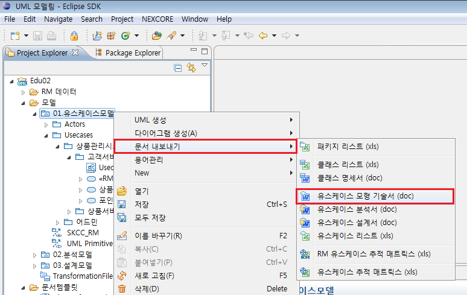
<그림 7. 유스케이스 모형 기술서 생성 메뉴>
3.2 내보내기 할 패키지 선택
[유스케이스 모형 기술서를 워드로 내보내기] 팝업창이 뜨면, 내보내기 할 패키지를 선택하고, 사용할 템플릿과 내보낼 파일명을 입력 후 [OK] 버튼을 클릭합니다. 이 때, 선택된 모델에 [Actors]와 [Usecases] 패키지가 반드시 존재해야 하고, 또한 반드시 선택되어야 합니다. 사용할 템플릿은 기본적으로 내장된 워드 템플릿(2 depth)으로 설정되어 있습니다.
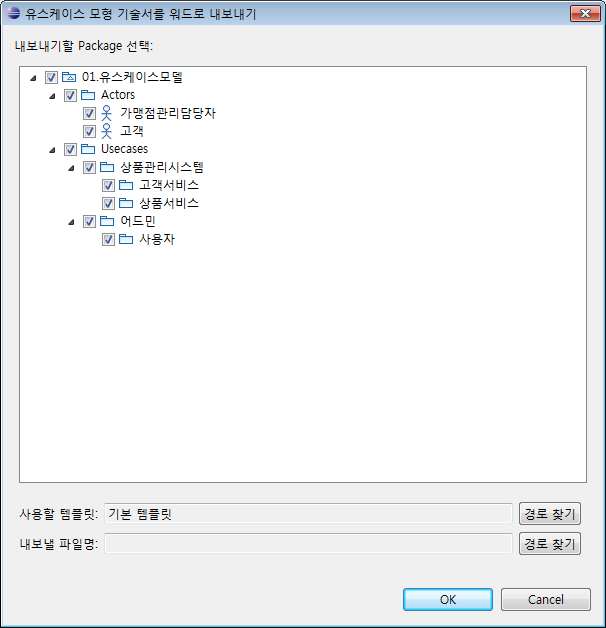
<그림 8. 유스케이스 모형 기술서 리스트 선택>
※ 2 depth 이외의 템플릿을 내보낼 경우
[문서템플릿] 폴더를 선택 후, 마우스 오른쪽 클릭 > Import 기능을 이용하여 다른 depth의 템플릿을 넣어 줍니다.
Import한 템플릿은 [사용할 템플릿] 설정에서 [경로 찾기]를 통하여 적용할 수 있습니다.
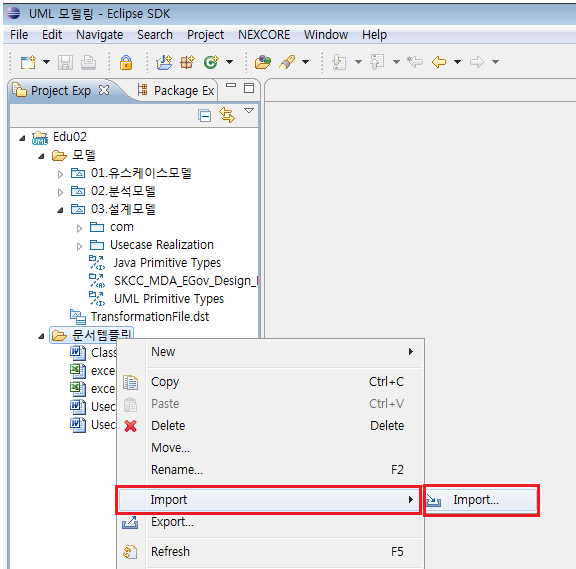
<그림 9. 문서 템플릿 Import>
3.3 유스케이스 모형 기술서 생성
[OK] 버튼을 클릭하면 원하는 위치에 [유스케이스 모형 기술서]가 생성됩니다.
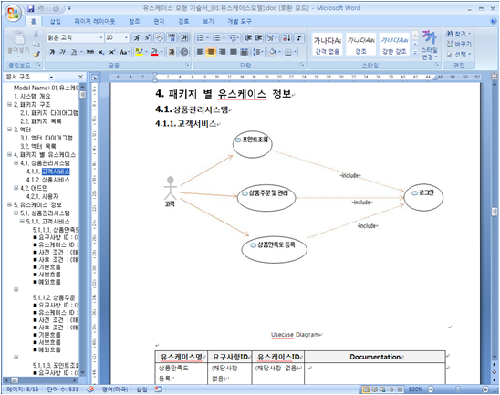
4. 유스케이스 분석서
4.1 유스케이스 분석서 내보내기
모델 [02.분석모델-Usecase Realization]을 마우스 오른쪽 클릭 > [문서 내보내기] > [유스케이스 분석서 (doc)] 를 선택합니다.
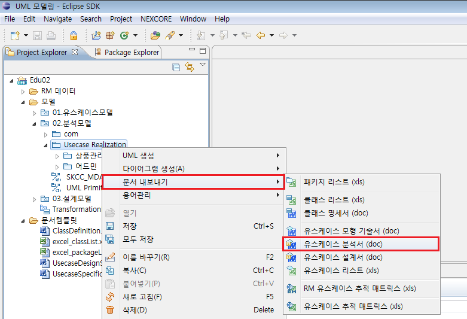
<그림 10. 유스케이스 분석서 생성 메뉴>
4.2 내보내기 할 패키지 선택
[유스케이스 분석서를 워드로 내보내기] 팝업창이 뜨면, 내보내기 할 패키지를 선택하고, 사용할 템플릿과 내보낼 파일명을 입력 후 [OK] 버튼을 클릭합니다. 이 때, 선택된 모델에는 [Usecase Realization] 패키지가 반드시 존재해야 하고, 또한 반드시 선택되어야 합니다. 사용할 템플릿은 기본적으로 내장된 워드 템플릿(3 depth)으로 설정되어 있습니다.

<그림 11. 유스케이스 분석서 리스트 선택>
※ 3 depth 이외의 템플릿을 내보낼 경우
[문서템플릿] 폴더를 선택 후, 마우스 오른쪽 클릭 > Import 기능을 이용하여 다른 depth의 템플릿을 넣어
줍니다.
Import한 템플릿은 [사용할 템플릿] 설정에서 [경로 찾기]를 통하여 적용할 수 있습니다.
4.3 유스케이스 분석서 생성
[OK] 버튼을 클릭하면 원하는 위치에 [유스케이스 분석서]가 생성됩니다.
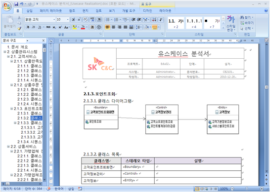
5. 유스케이스 설계서
5.1 유스케이스 설계서 내보내기
모델 [03.설계모델-Usecase Realization]을 마우스 오른쪽 클릭 > [문서 내보내기] > [유스케이스 설계서 (doc)]를 선택합니다.
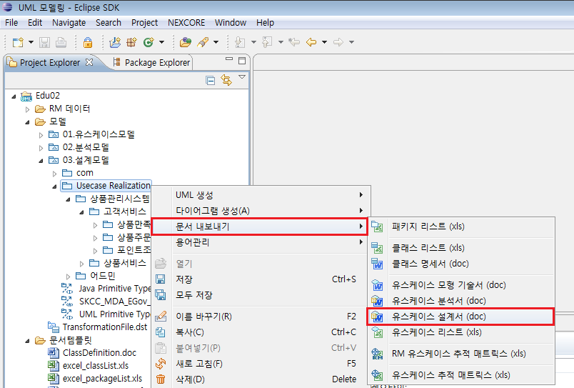
<그림 12. 유스케이스 설계서 생성 메뉴>
5.2 내보내기 할 패키지 선택
[유스케이스 설계서를 워드로 내보내기] 팝업창이 뜨면, 내보내기 할 패키지를 선택하고, 사용할 템플릿과 내보낼 파일명을 입력 후 [OK] 버튼을 클릭합니다. 해당 모델에는 [Usecase Realization] 패키지가 반드시 존재해야 하며, 또한 반드시 선택되어야 합니다. 사용할 템플릿은 기본적으로 내장된 워드 템플릿(3 depth)으로 설정되어 있습니다.
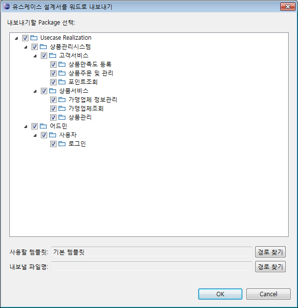
<그림 13. 유스케이스 설계서 리스트 선택>
※ 3 depth 이외의 템플릿을 내보낼 경우
[문서템플릿] 폴더를 선택 후, 마우스 오른쪽 클릭 > Import 기능을 이용하여 다른 depth의 템플릿을 넣어
줍니다.
Import한 템플릿은 [사용할 템플릿] 설정에서 [경로 찾기]를 통하여 적용할 수 있습니다.
5.3 유스케이스 설계서 생성
[OK] 버튼을 클릭하면 원하는 위치에 [유스케이스 설계서]가 생성됩니다.
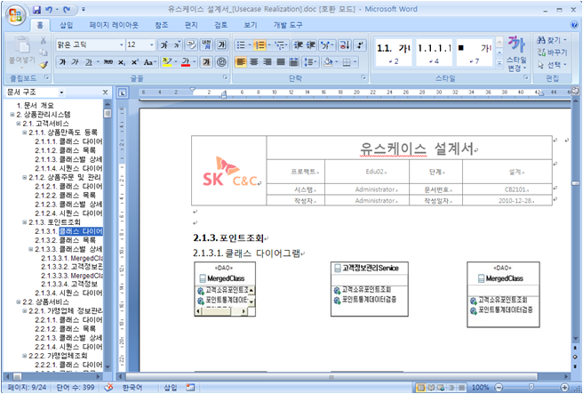
6. 유스케이스 리스트
6.1 유스케이스 리스트 내보내기
모델 [01.유스케이스모델]을 마우스 오른쪽 클릭 > [문서 내보내기] > [유스케이스 리스트 (xls)] 를 선택합니다.
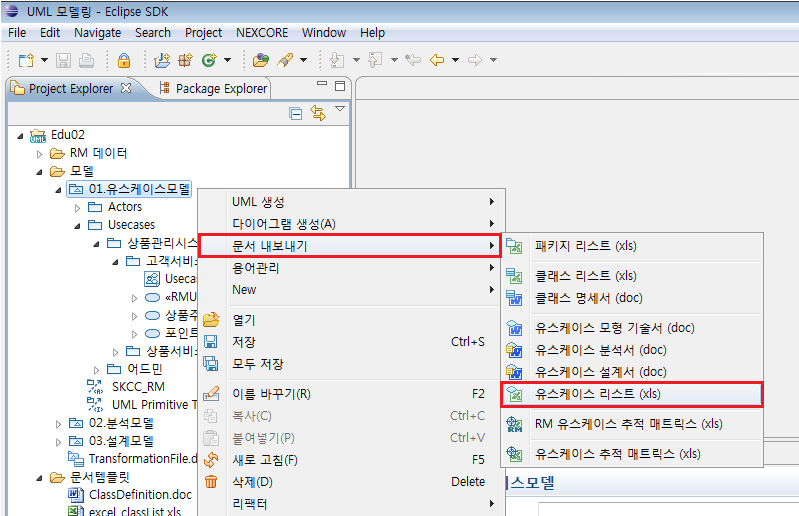
<그림 14. 유스케이스 리스트 생성 메뉴>
6.2 내보내기 할 요소 선택
[유스케이스 리스트를 엑셀로 내보내기] 팝업창이 뜨면, 내보내기 할 패키지 또는 유스케이스를 선택하고, 사용할 템플릿과 내보낼 파일명을 입력 후 [OK] 버튼을 클릭합니다.
사용할 템플릿은 기본적으로 내장된 엑셀 템플릿으로 설정되어 있습니다.
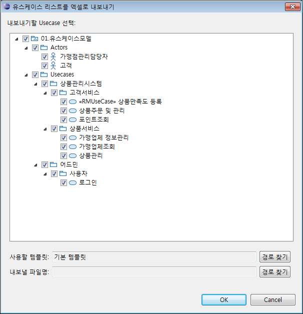
<그림 15. 유스케이스 리스트 선택>
※ 다른 템플릿을 사용하고 싶을 경우
[문서템플릿] 폴더를 선택 후, 마우스 오른쪽 클릭 > Import 기능을 이용하여 다른 템플릿을 가져옵니다.
Import한 템플릿은 [사용할 템플릿] 설정에서 [경로 찾기]를 통하여 적용할 수 있습니다.
6.3 유스케이스 리스트 생성
[OK] 버튼을 클릭하면 원하는 위치에 [유스케이스 리스트]가 생성됩니다.
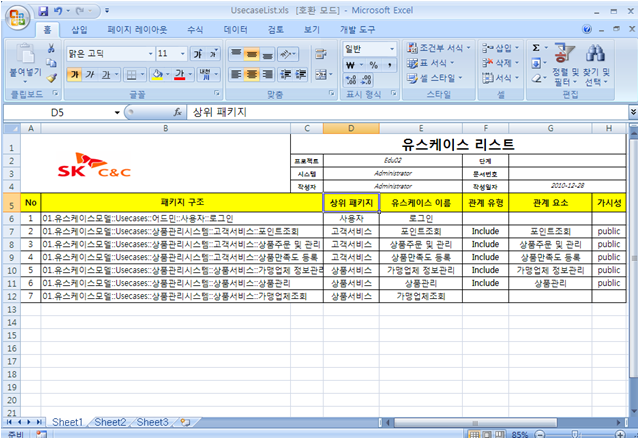
7. 유스케이스 추적 매트릭스
7.1 유스케이스 추적 매트릭스 내보내기
유스케이스 추적 매트릭스를 생성하기 위해서는 특정 모델을 선택할 필요가 없고 아무 UML 모델을 선택하고 진행할 수 있습니다. 여기서는 [03.설계모델]을 마우스 오른쪽 클릭 > [문서 내보내기] > [유스케이스 추적 매트릭스 (xls)] 를 선택합니다.
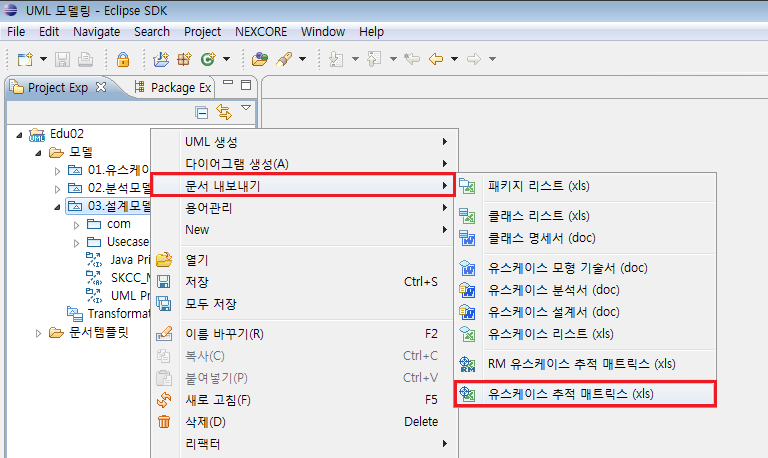
<그림 16. 유스케이스 추적 매트릭스 생성 메뉴>
7.2 추적 대상 모델 선택
[유스케이스 추적 매트릭스 생성] 팝업창이 뜨면, 분석 모델과 설계 모델을 선택합니다.
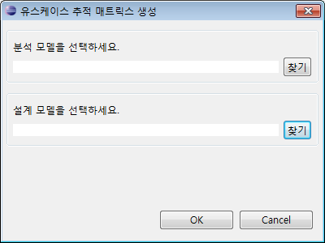
<그림 17. 유스케이스 추적 매트릭스 생성 다이얼로그>
팝업창에서 분석 모델 영역의 [찾기] 버튼을 클릭하여 분석 모델을 선택하고 [OK] 버튼을 클릭합니다.
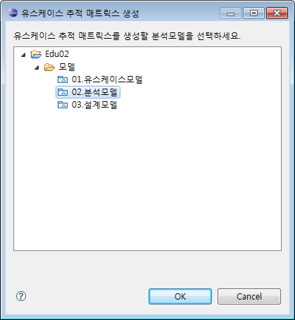
<그림 18. 유스케이스 추적 매트릭스 분석모델 선택>
팝업창에서 설계 모델 영역의 [찾기] 버튼을 클릭하여 설계 모델을 선택하고 [OK] 버튼을 클릭합니다.
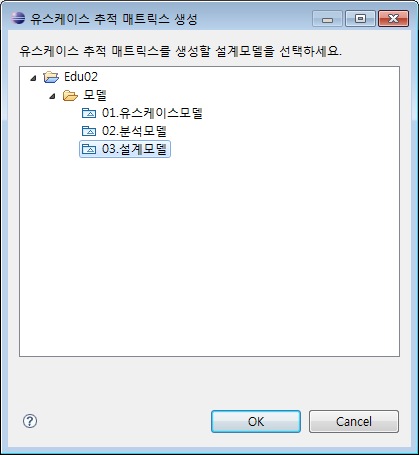
<그림 19. 유스케이스 추적 매트릭스 설계모델 선택>
분석 모델과 설계 모델이 선택되면, [유스케이스 추적 매트릭스 생성] 팝업창에서 [OK] 버튼을 클릭합니다.
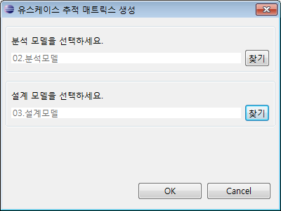
<그림 20. 유스케이스 추적 매트릭스 다이얼로그>
7.3 유스케이스 추적 매트릭스 생성
원하는 위치를 지정하면, 그 위치에 [유스케이스 추적 매트릭스]가 생성됩니다.
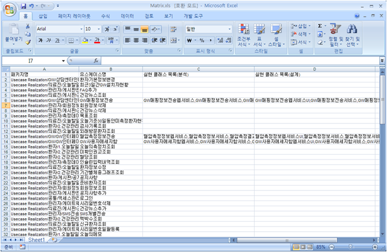
8. RM 유스케이스 추적 매트릭스
RM 유스케이스 추적 매트릭스를 생성하기 위해서는, 유스케이스 모델에 RM 프로파일이 적용된 상태에서, 유스케이스 모델 안에 작성된 유스케이스에 RMUseCase 스테레오 타입이 적용되어 있어야 합니다. 그리고 RMUseCase 스테레오타입이 적용된 유스케이스에는 requirementIds 값이 채워져 있어야 합니다.
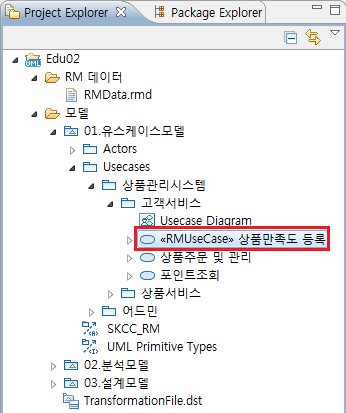
<그림 21. RM 스테리오타입 적용>
8.1 RM 유스케이스 추적 매트릭스 내보내기
모델 [01.유스케이스모델]을 마우스 오른쪽 클릭 > [문서 내보내기] > [RM 유스케이스 추적 매트릭스 (xls)]를 선택합니다.
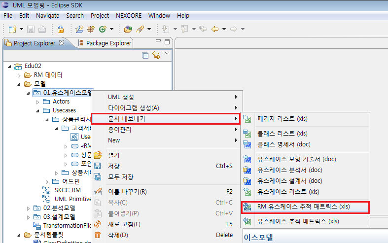
<그림 22. RM 유스케이스 추적 매트릭스 생성 메뉴>
8.2 내보내기 할 패키지 선택
[RM 유스케이스 추적표를 엑셀로 내보내기] 팝업창이 뜨면, 내보내기 할 패키지 또는 유스케이스를 선택하고, 사용할 템플릿과 내보낼
파일명을 입력 후 [OK] 버튼을 클릭합니다.
사용할 템플릿은 기본적으로 내장된 엑셀 템플릿으로 설정되어 있습니다.
-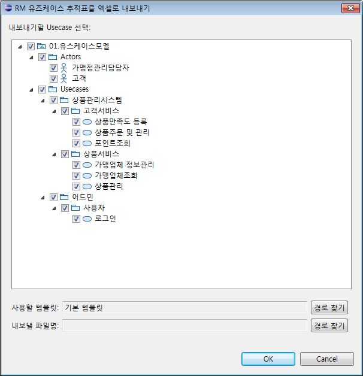
<그림 23. RM 유스케이스 추적 매트릭스 리스트 선택>
※ 다른 템플릿을 사용하고 싶을 경우
[문서템플릿] 폴더를 선택 후, 마우스 오른쪽 클릭 > Import 기능을 이용하여 다른 템플릿을 가져옵니다.
Import한 템플릿은 [사용할 템플릿] 설정에서 [경로 찾기]를 통하여 적용할 수 있습니다.
8.3 RM 유스케이스 추적 매트릭스 생성
[OK] 버튼을 클릭하면 원하는 위치에 [RM 유스케이스 추적 매트릭스]가 생성됩니다.
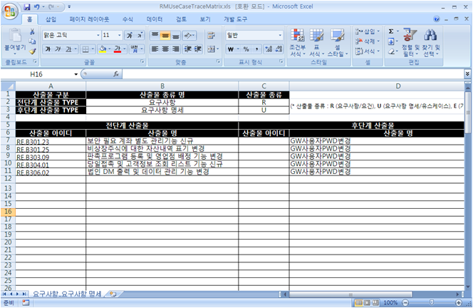